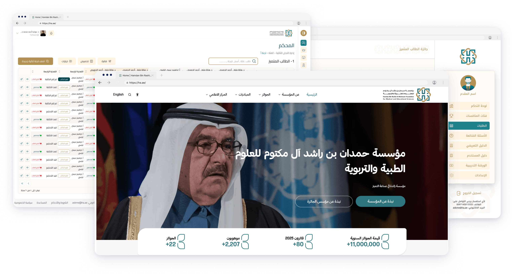

منتج مؤسسي · مسارات متعددة الأدوار · نظام تصميم
جوائز حمدان
تبسيط منصة معقدة متعددة الأدوار لإدارة الجوائز.
- الدور
- مصمم منتجات رئيسي
- المدة
- 12 أسبوعًا
- المنصة
- الويب وiOS
- السنة
- 2026
- القطاع
- حكومي · تعليم · منصة رقمية
- المتعاونة
- إشراقات ماهر — مصممة UI/UX

دراسة الحالة · نظرة عامة
تجربة جوائز واحدة وثلاثة منتجات مترابطة
تخدم منظومة جوائز حمدان أكثر من 5,000 متقدم ومحكّم وعضو لجنة ومسؤول إداري. ربط العمل بين الموقع الرسمي للمؤسسة، ومنصة التقديم، ومنصة إدارة الجوائز الداخلية.
كان الهدف تبسيط عملية طويلة ومتعددة المراحل من دون إلغاء المرونة المطلوبة لاختلاف فئات الجوائز والأدوار ومراحل التقييم واللغتين العربية والإنجليزية.
الهدف والنطاق
لم يكن المشروع تحديثًا بصريًا لواجهة واحدة، بل إعادة تنظيم للخدمة كاملة: اكتشاف الجائزة، فهم الأهلية، إعداد الطلب، رفع الأدلة، متابعة الحالة، مراجعة المشاركات، تنسيق المحكّمين، وإعلان النتيجة.
شمل دوري استراتيجية التجربة، وهندسة المعلومات، وتدفقات المستخدم، وتصميم التفاعل والواجهات، والنماذج الأولية والاختبار، وتوجيه نظام التصميم والتسليم للتطوير. عملت مع إشراقات ماهر في تصميم UI/UX ومع أصحاب المصلحة والهندسة طوال التنفيذ.
01 · التحدي
جعل التعقيد مفهومًا
كانت التجربة مجزأة بين الاكتشاف والتقديم والمراجعة والإدارة. احتاج المتقدمون إلى إرشاد أوضح، بينما احتاجت الفرق الداخلية إلى طريقة موثوقة لتنسيق عملية تحكمها أدوار وقواعد كثيرة.
رحلة تقديم مجزأة
لم تظهر الأهلية والمتطلبات والأدلة والتقدم والنتائج كرحلة واحدة مترابطة.
تعقيد تشغيلي
ينتقل الطلب بين الإدارة واللجان وقادة الفرق والمحكّمين، ولكل دور معلومات وصلاحيات مختلفة.
خبرة رقمية متفاوتة
كان على المنتج خدمة المتقدم الذي يستخدمه مرة واحدة والمستخدم التشغيلي الخبير بالوضوح نفسه.
التوسع دون جمود
احتاجت المؤسسة إلى أنماط تستوعب دورات وفئات متعددة بالعربية والإنجليزية.
02 · البحث
الأدلة قبل قرارات الواجهة
بدأنا بدراسة المنصة القائمة ومراجعة التحليلات المتاحة خلال نحو خمسة أيام، ثم استخدمنا مقابلات أصحاب المصلحة والمستخدمين لفهم المسؤوليات والتبعيات ونقاط الالتباس في دورة الجوائز.
تحولت النتائج إلى رحلات وأدوار وتدفقات ذات أولوية قبل الانتقال إلى المفاهيم والنماذج الأولية والتحقق والتسليم ثم القياس بعد الإطلاق.
- الفهمالمنصة الحالية والتحليلات
- الاستماعمقابلات المستخدمين وأصحاب المصلحة
- التأطيرالرحلات والأدوار والتدفقات
- الاستكشافالمفاهيم والنماذج الأولية
- التحققالاختبار والتكرار
- القياسالأداء بعد الإطلاق
ما الذي غيّرته الأدلة؟
نقلت الأبحاث التركيز من إضافة مزيد من الوظائف إلى تقليل الجهد المطلوب لفهم العملية. ظهرت الفرص الأعلى قيمة في الانتقالات بين المراحل، ووضوح الحالة، ومعرفة من يملك الإجراء التالي.
- إظهار المتطلبات مبكرًا مع تقدم واضح طوال الطلب.
- مطابقة واجهة كل دور مع مسؤولياته الفعلية.
- الحفاظ على كثافة المعلومات مع تسلسل بصري وفلاتر وسياق ثابت.
- تصميم العربية والإنجليزية من البداية بدل عكس الواجهة في النهاية.
03 · المنظومة
رحلة مترابطة وليست شاشات منفصلة
نُظمت التجربة حول ثلاثة منتجات، لكل منها لحظته ووظيفته، لكنها تعمل ضمن رحلة واحدة من التعرف على الجائزة إلى التقديم والتقييم والنتيجة.
موقع المؤسسة
اكتشاف المؤسسة والجوائز والأهلية والمعلومات الرسمية.
منصة التقديم
اختيار الفئة وتجهيز الأدلة وإرسال الطلب ومتابعته.
إدارة الجوائز
تنسيق الطلبات واللجان والتحكيم والقرارات.
- الاكتشافالعثور على الجائزة المناسبة وفهم متطلباتها.
- التحقق من الأهليةتأكيد ملاءمة الفرصة قبل بدء الطلب.
- التقديمإكمال النموذج الموجّه وإضافة الأدلة المطلوبة.
- المراجعةالتحقق من اكتمال الطلب وجاهزيته.
- التقييمتقييم الطلب وفق المعايير المحددة.
- القراراعتماد النتائج من خلال اللجان المعنية.
- الإشعارإبلاغ النتيجة والخطوات التالية ذات الصلة.
04 · منصة التقديم
تحويل طلب طويل إلى عملية موجهة
جرى تقسيم المتطلبات الطويلة إلى خطوات يمكن إدارتها، مع إرشاد سياقي وتحقق مبكر وشرح للأدلة قبل الرفع. وأصبحت لوحة المتقدم مصدرًا واحدًا للحالة والمواعيد والخطوة التالية.
قرارات أساسية
- عرض فئات الجوائز بوضوح قبل بدء الطلب.
- تأكيد الأهلية في البداية لتجنب جهد غير ضروري.
- تحويل المتطلبات إلى قائمة مراحل ذات تقدم مرئي.
- شرح صيغ الملفات وحدودها بجانب إجراءات الرفع.
نتيجة المتقدمين
بعد الإطلاق ارتفع أداء التقديم بنسبة 1,352%. وجمع استبيان الرضا 257 إجابة وسجل أكثر من 80% رضا للمستخدمين.
منصة التقديم
05 · إدارة الجوائز
دعم كل دور دون كشف كل شيء
تنسق المنصة الداخلية عملية كبيرة بين الإدارة ومديري اللجان وقادة الفرق والمحكّمين. صُممت المعلومات والإجراءات والتنقل وفق مسؤولية المستخدم ومرحلة العمل بدل فرض واجهة واحدة على الجميع.
الإدارة
إعداد الدورات والفئات والصلاحيات والإشراف.
اللجان
تنظيم التعيينات ومراقبة التقدم والاستثناءات.
قادة الفرق
تنسيق المراجعين وضمان جاهزية التقييم.
المحكّمون
مراجعة الأدلة وتطبيق المعايير وإكمال التقييم.
التقييم على نطاق تشغيلي
حافظت التجربة على سياق ثابت بين الطلب والأدلة والمعايير والحفظ والقرار، مع حالات واضحة وفلاتر وإجراءات متوقعة. أظهر الاختبار مع 20 مستخدمًا نجاحًا في المهام بنسبة 82%، وأنجز ستة من ثمانية مشاركين المهام ضمن الزمن المستهدف.
إدارة الجوائز
06 · نظام التصميم
اتساق بين المنتجات والأدوار واللغات
وحّد نظام تصميم مشترك الموقع ومنصة التقديم ومنصة الإدارة. شمل الأسس وأنماط النماذج والجداول والفلاتر والحالات والرفع والتنقل والتغذية الراجعة، مع مرونة تناسب سياق كل منتج.
RTL وLTR منذ البداية
عوملت العربية والإنجليزية كتجربتين متساويتين، وجرى فحص الاتجاه والمحاذاة وسلوك الأيقونات وكثافة البيانات وتركيب المكونات في كلا الاتجاهين.
07 · الموقع
ربط المعلومات العامة بالفعل
كان الموقع جزءًا من المنظومة، يشرح المؤسسة والجوائز ويحسن اكتشاف المحتوى ويقود الزائر من فهم الفرصة إلى بدء الطلب. أعيد تنظيم هندسة المعلومات والتسلسل الهرمي لربط المحتوى العام بتفاصيل الجائزة والمتطلبات ومسار التقديم.
الموقع
الخلاصة · الحل
ثلاثة تغييرات صنعت منظومة واحدة
ساعدت التحليلات والمقابلات ورسم التدفقات والنماذج الأولية والتحقق على تحديد اللحظات التي يحتاج فيها المستخدم إلى أكبر قدر من الوضوح.
- توجيه المتقدمتقسيم المتطلبات إلى خطوات مع إرشاد وتحقق وتقدم واضح.
- دعم الأدوارتقديم المعلومات والإجراءات المناسبة للإدارة واللجان وقادة الفرق والمحكّمين.
- توسيع المنظومةاستخدام نظام تصميم ثنائي اللغة عبر المنتجات الثلاثة.
08 · النتائج
تحسن قابل للقياس على جانبي الرحلة
كانت النتيجة رحلة أوضح للمتقدمين ونموذج تشغيل أكثر تنظيمًا للفرق التي تدير الجوائز.
تعكس الأرقام تقارير المشروع المعتمدة دون عرض تحليلات خاصة أو بيانات متقدمين.
09 · الخلاصة
الوضوح قرار على مستوى المنظومة
تصبح المنتجات المؤسسية المعقدة أسهل عندما تُصمم حول المسؤوليات والقرارات والانتقالات، لا حول مجموعة صفحات. إظهار الحالة والملكية والخطوة التالية خفّض الاحتكاك للمستخدمين العرضيين والخبراء.
أكد المشروع أيضًا أهمية التعامل مع السلوك ثنائي اللغة والأنماط المشتركة كقرارات تأسيسية تربط المنتجات مع إبقاء المرونة المناسبة لكل منها.